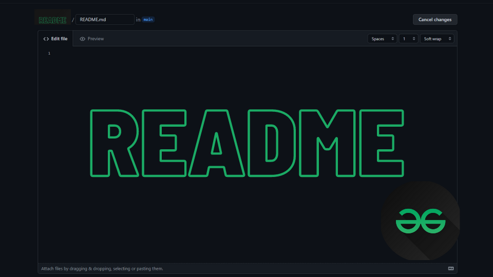

What is the purpose of a README file?
Readme in a few words
The README file is used to explain what files are included and how the project can be installed or used. It allows the owner to add images and videos to help the reader navigate the project. A well-written README helps users or developers understand the project's structure and can attract more contributors.